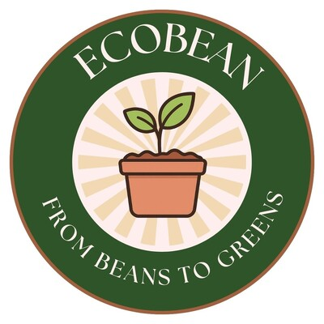

Six things I've started or led since 2022. Each one began as a small question and grew because I kept showing up for it.
6ventures & clubs
3rdnationally with EcoBean
50+club applications; Project Wish got in
Since 2022Still growing

Sep 2025 — Sep 2026Co-founder & CEO
EcoBean
A student-led startup making plant-growing kits from recycled cans, cardboard and newspaper, with homemade fertilizer from used coffee grounds. Built to help elementary and middle schoolers turn what they learn about global warming into real action.
Engineered the fertilizer through iterative testing and product optimization.
Led a 30-person team across marketing, finance, HR/PR, and production; sold 27 kits for $540 after a last-week prototype push in the Robotics Lab.
Placed 3rd in Singapore at the Junior Achievement 2025–26 competition, the first SAS team in the top three in six years.
Ran an entrepreneurship workshop for a Girl Scouts troop earning their Budding Entrepreneur badge, and an elementary school visit.
A youth initiative partnering with Ambulance Wish Singapore, which grants final wishes to terminally ill patients, and Make-A-Wish. It started with me putting up fundraiser posters around Robertson Quay in 2024.
One of the few clubs approved out of 50+ applications.
Run fundraisers, build partnerships, and coordinate service opportunities for members.
Planned the school's first social media fundraiser; the club received the Outstanding New Service Club Award from the SAS Eagle Service Council in 2026.
Through my Ambulance Wish internship, joined two wish trips and trialled bringing a student photographer, opening a path to direct service for members.
Aug 2023 — PresentCo-president
Code For All
An international service project that teaches underprivileged children to code, hosts workshops, and repairs old laptops to donate.
Worked in the fundraising branch from freshman year, planning fundraising and outreach events; now elected co-president.
With Yibo Yang and Nirvan Anand, gave two one-hour vibe-coding presentations to 100+ master's students at ESSEC Business School, covering tools from Claude to Vercel.
Led digital literacy presentation development for a service conference hosted by the Jalan Besar Project.
Planning old-tech drives, new charity partners, and an AI literacy curriculum for this year.
Apr 2026 — PresentOfficer
Entrepreneurship Club
Mentoring students for the next Junior Achievement cycle and giving members more hands-on ways into entrepreneurship.
Led a partnership with the middle school's Grade 6 "Shark Tank" unit: club members coached students through ideation, problem validation, and pitching.
Helped run and emcee the final pitch event for the whole grade; 8 finalists pitched, and the winning idea will be funded and built at the school next year.
Bringing in new competition pathways, including the Conrad Challenge and Diamond Challenge.
Jun 2023 — PresentFounder
Cricket Coaching Service
A coaching service for kids in my condo, started in summer 2023 to share my love of the sport. Talking with parents as clients taught me responsibility and communication.
Designed a structured coaching curriculum for youth athletes.
Delivered training sessions preparing students for club-level competitions.
Managed client communications and scheduling logistics.
Jun — Aug 2022Founder
Delivery Service
A neighbourhood grocery delivery service for working parents with young children in my condominium. The starting point for everything after it.
Managed logistics, pricing, and scheduling independently.
Generated $300+ in revenue.
Want the full picture?
Awards, programs, and everything else are on my résumé.